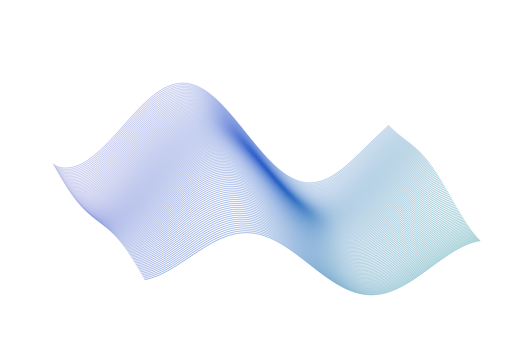

Hanyang University · SeoulMaterials / Processes / Devices
Engineering the next wave of semiconductors.
한양대학교 차세대 반도체소자 융합연구실
Materials, processes, and devices for next-generation electronics.
01 / The laboratory
Explore our researchACSoL은 차세대 메모리, 뉴로모픽 소자, 3D 반도체 공정과 열관리 소재를 연구합니다. 소재와 공정부터 소자 및 시스템 응용까지 연결합니다.

Advanced Convergence Semiconductors Innovation LabLatest news ↓
02 / Latest from ACSoL
All news Notes from the lab.
연구실 소식을 불러오는 중